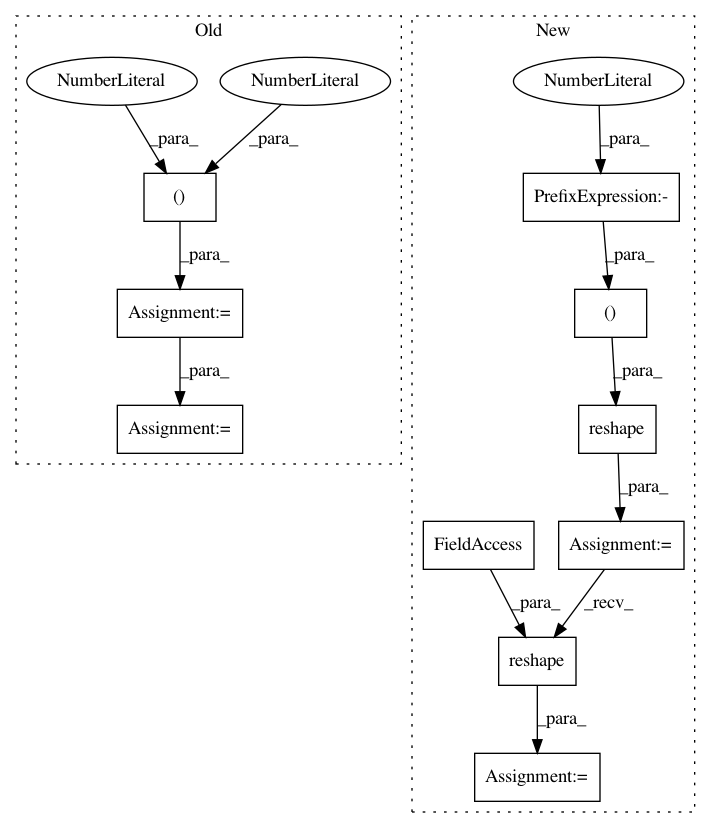

562508c5edf9988078f3ca4300e1d6be569a4b8f,python/timeseries/timeseries_customRNN.py,TsRNNCustom,predict,#TsRNNCustom#Any#Any#,141
Before Change
if self.n_inputs != 1:
raise ValueError("Currently only supports univariate input per time-step")
preds = list()
x = np.zeros(shape=(1, self.n_lag, 1), dtype=np.float32)
for i in range(self.n_lag):
x[0, i, 0] = start_ts[i]
init_state = np.zeros(shape=(1, self.state_size))
for i in range(n):
yhat = self.predict_op.eval(feed_dict={self.X: x,
self.init_state: init_state})
logger.debug("pred: %d %s" % (i, str(yhat)))
preds.append(yhat[0, 0])
for lag in range(self.n_lag-1):
x[0, lag, 0] = x[0, lag+1, 0]
x[0, self.n_lag-1, 0] = yhat[0, 0]
return np.array(preds)
After Change
if self.n_inputs != 1:
raise ValueError("Currently only supports univariate input per time-step")
seq = list(np.reshape(start_ts, newshape=(-1,)))
logger.debug("seq: %s" % str(seq))
preds = list()
init_state = np.zeros(shape=(1, self.state_size))
for i in range(n):
ts = seq[-self.n_lag:]
X_batch = np.array(ts).reshape(1, self.n_lag, self.n_inputs)
yhat = self.predict_op.eval(feed_dict={self.X: X_batch,
self.init_state: init_state})
logger.debug("pred: %d %s" % (i, str(yhat)))
preds.append(yhat[0, 0])
In pattern: SUPERPATTERN
Frequency: 3
Non-data size: 10
Instances
Project Name: shubhomoydas/ad_examples
Commit Name: 562508c5edf9988078f3ca4300e1d6be569a4b8f
Time: 2018-04-01
Author: smd.shubhomoydas@gmail.com
File Name: python/timeseries/timeseries_customRNN.py
Class Name: TsRNNCustom
Method Name: predict
Project Name: albermax/innvestigate
Commit Name: d9aec7b8c8424e4392320358dfd30b25b13f992a
Time: 2018-10-21
Author: philipp.seegerer@tu-berlin.de
File Name: innvestigate/tools/perturbate.py
Class Name: Perturbation
Method Name: compute_perturbation_mask
Project Name: albermax/innvestigate
Commit Name: 2b42c95e4fa7c4d4e61cdf4f64655efb7667b757
Time: 2018-10-11
Author: philipp.seegerer@tu-berlin.de
File Name: innvestigate/tools/perturbate.py
Class Name: Perturbation
Method Name: compute_perturbation_mask